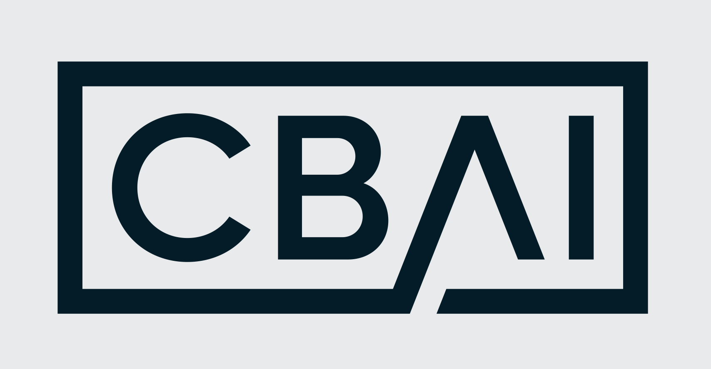
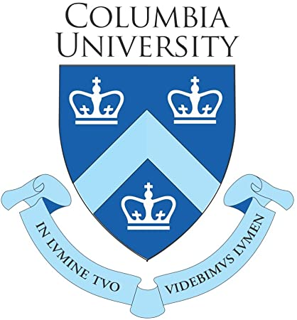

Tsinghua University, Laboratory of Brain and Intelligence (THBI)
2020 Nov - 2021 Apr
Supervised by Prof. Jia Liu
2020 Nov - 2021 Apr
Supervised by Prof. Jia Liu
Tencent, Lightspeed & Quantum Studio
2020 May - 2020 Oct
Supervised by Dr. Runze Zhang
2020 May - 2020 Oct
Supervised by Dr. Runze Zhang
iFlytek, AI Service Department
2018 Apr - 2018 Aug
Supervised by Dr. Xiaowei Fang and Dr. Yu Di
2018 Apr - 2018 Aug
Supervised by Dr. Xiaowei Fang and Dr. Yu Di